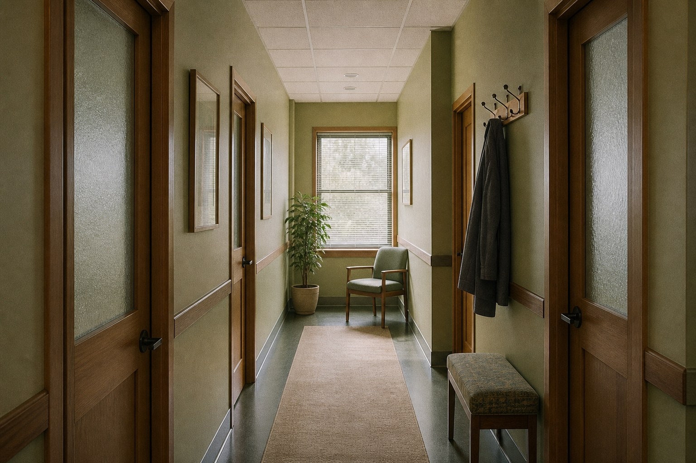
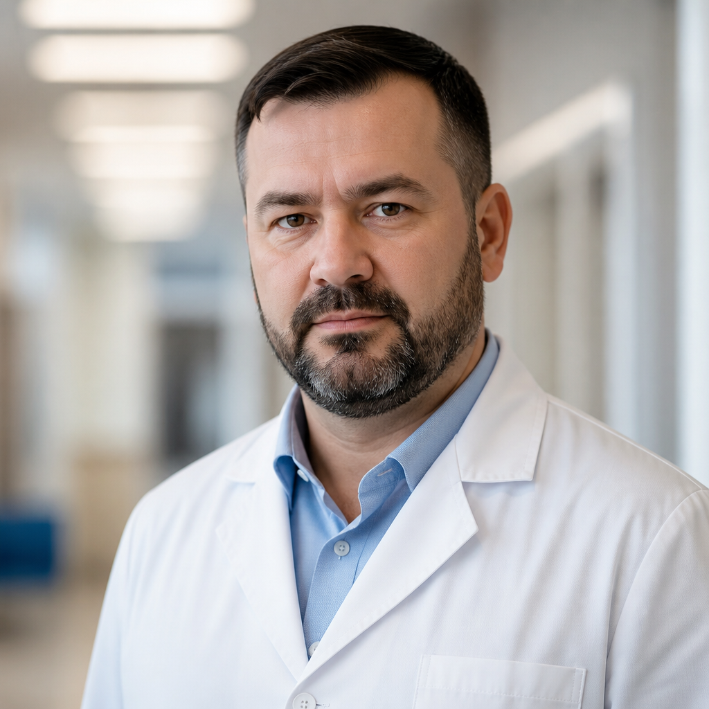

Невролог

Коридор к кабинетам

Шаров Дмитрий Юрьевич Невролог, с 2020 года работает в «Горном покое» по совместительству. Принимает пациентов с головными болями, бессонницей и соматическими жалобами на фоне тревоги — по направлению коллег из клиники.
Приём: пн, ср, пт 09:00–14:00
Стоимость: 2 800 ₽ / час
Специализация: Бессонница, головные боли напряжения, неврологические жалобы.